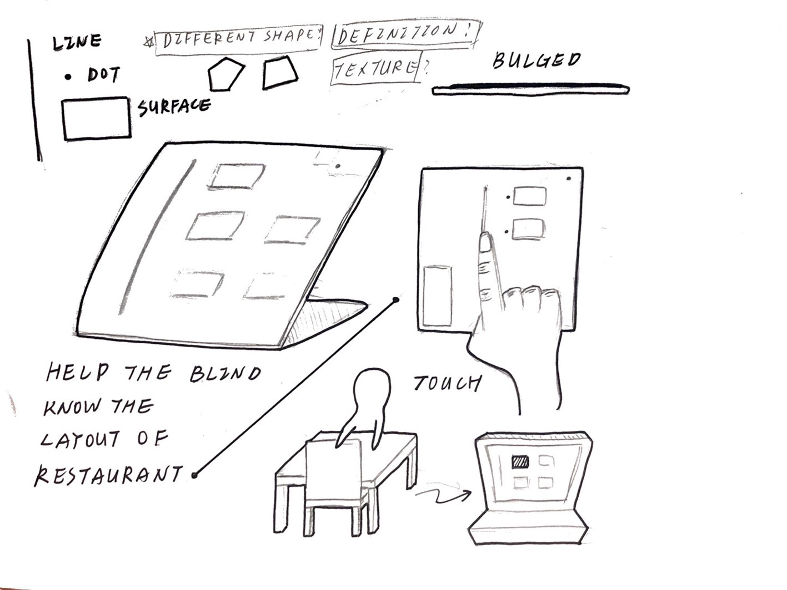

to-Mapper
A tactile map designed for
the visually impaired
@Design for Taiwan
Introduction
Dining out is prevalent in Taiwan. More than 20% of the population would dine out every meal, and about 70% would eat out at least once per day. It seems like there are abundant choices for meals, and getting food is convenient for people in Taiwan.
However, things may be totally different for the visually impaired.
For the visually impaired, dining out cannot be a whim and needs to be planned first. They need help to find the entrance of the restaurants. They could not order food as their will totally because they are afraid of causing a great burden on those who help them.
Eating in a restaurant is full of difficulties and pressure to the visually impaired, and thus we aim to improve their dine-out experience.
Project Topic
To gain insight into all the problems they have met, we conducted six interviews and found the six most frequently mentioned pain points during their dine-out process:
- *Unclear instructions of seat information given by the waiters/ waitresses.
- *Do not know where the exit/ restroom/ self-service area is, and always need help in getting to these places.
- *Do not know where the counter is and have difficulties in asking for help.
- Unable to see the menu cause difficulties in knowing prices and choices of meals.
- Unclear about where utensils are placed on the table.
- Food is all over the table because of lacking visual aid.
We found that lots of the difficulties they met are caused by not knowing the restaurant layout according to the results of interviews (marked with *). For example, they cannot find the counter to ask for help.
Moreover, we found that most of them have a strong desire to finish all the dining process without others' help, which could be achieved by understanding the layout of the restaurant.
Considering the research results, we summarized our problem statement as follows:
The autonomy of the visually impaired when dining out is important,
How might we notify the visually impaired about the location of significant components in the restaurants.
Research
We conducted the following research to better understand attributes of the users and confirm their needs of the space cognition.
{kind=link}
{kind=link}
{kind=link}
{kind=link}
Prototype
“to-Mapper” is a tactile map that notifies the user about the location of significant components in the restaurants.
We combine the concept of cognitive map and haptic perception. A cognitive map is a mental representation of one's physical environment. Haptic perception means an active exploration of objects to recognize them through touch.
to-Mapper
Target audience: severely visually impaired
Field: restaurants in 889-1779 square feet
Funtion:
- Understand the relative location of counter, restrooms, self-service areas, and entrance.
- Voice function : Press the target component to know what is it.
- Disassembled components: The components on the map can be adjusted according to different restaurants.
- Hand-held size：Easy for the visually impaired to hold and touch
Draft
{kind=link}
First Version Prototype
We made a prototype based on the in-store layout of the restaurant where we would conduct usability tests. We marked the entrance, seat (current/other), restroom, workbench of the restaurant and differentiated them with various media, such as cardboard and Polypropylene board. We also distinguished them through different heights. For example, the counter is more salient since it is more important for the visually impaired to ask for help.
{kind=link}

Event Flow
The event flow shows how the visually impaired can use the map when they enter the restaurants.
{kind=link}
Usability Tests
We conducted four usability tests with the visually impaired and two with the restaurant managers after we finished the first version of our prototype.
Feedback from the users - the visually impaired
- The size could be as large as A4.
- The tactile of the components can be more different, such as the hook side and the loop side of the Velcro.
- Mark the aisles in the restaurants so that they can understand how to move.
- Replace voice function with braille based on their habits. Add descriptions at the side of the map to explain what each material represents.
Feedback from the users - restaurant managers
- Normal restaurants
- The layout of the restaurant changes frequently, and the map should be easy to disassemble.
- The map should be durable because of the low probability of serving the visually impaired.
- The design should be easy to operate.
- Restaurants which provided special help to the visually impaired
- Very confident in the restaurant’s service, no need to provide maps for the visually impaired.
Outcome and
Design feedback
Revision
According the the results of the usability tests, we revised to-Mapper as following:
- Increase the distinction of the components’ tactility.
- Increase in size to A5.
- Only mark important parts of the restaurants, including the entrance, the counter, current seats, restroom.
- Replace voice function with braille.
Value
We design to-Mapper based on the desire to help the visually impaired increase accessibility to the information and overcome the barriers in their daily lives. With the understanding of the important components in the restaurants, their autonomy and sense of security can be improved. We believe it is the first step to generate more positive behaviors in their lives. In the future, we hope to set up a friendly dining environment for the visually impaired and make their lives better.